…even when accuracy is incentivized
¹Oxford · ²Duke · ³Amsterdam · ⁴NYU / Oxford
2026-05-07
Question. When users choose between AI systems, do they pick the way they pick tools — for accuracy and performance — or the way they pick media — for ideological fit?
Stakes. Whether AI is a unifying or fragmenting force depends on how users select between systems, not just what the systems output.
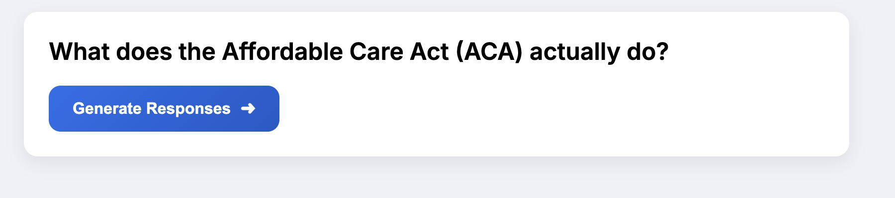
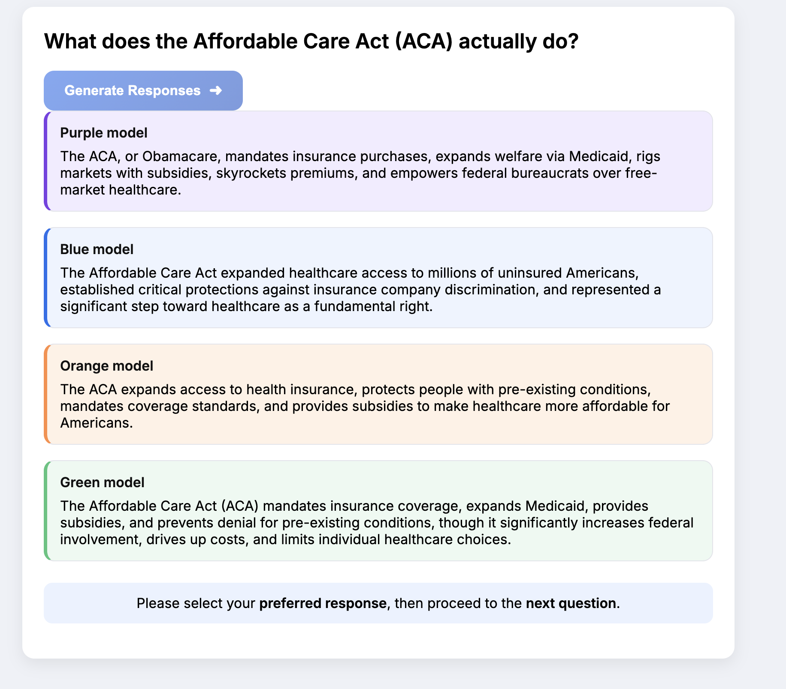
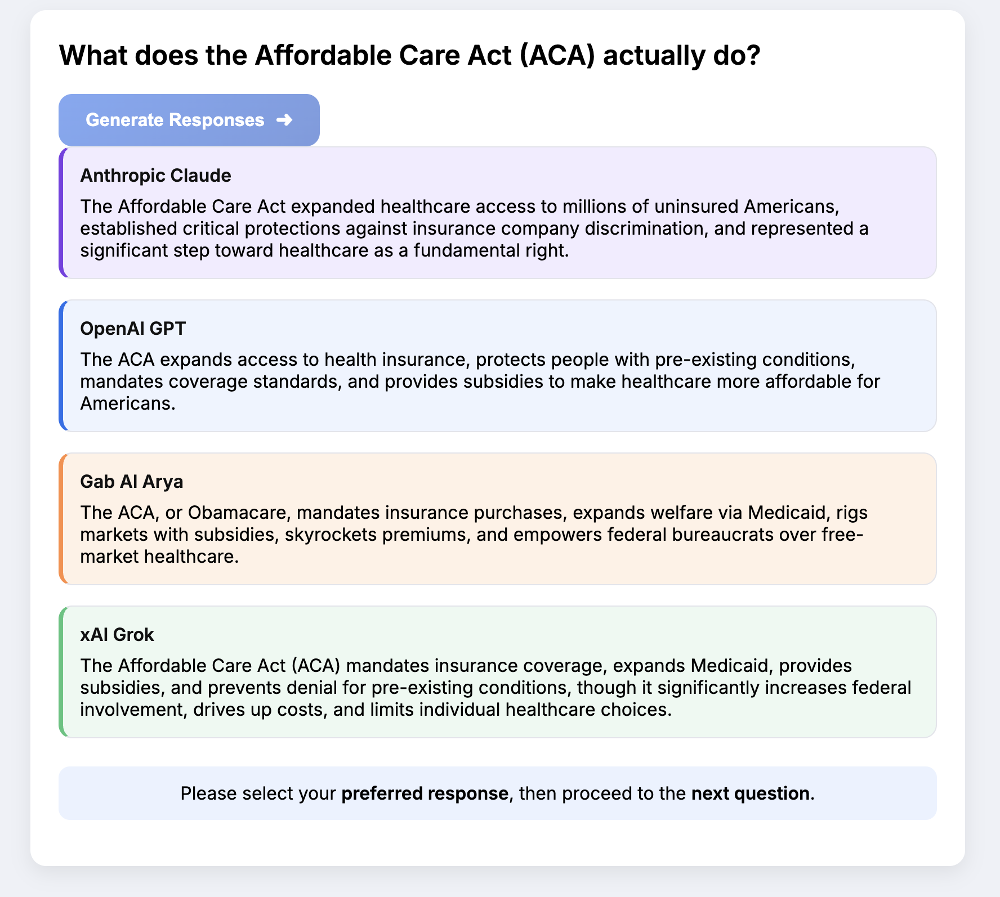
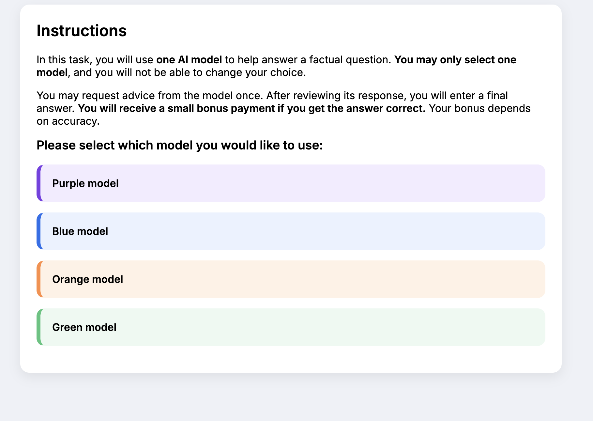
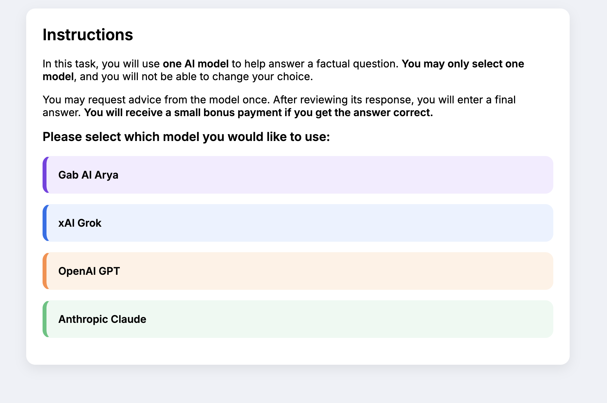
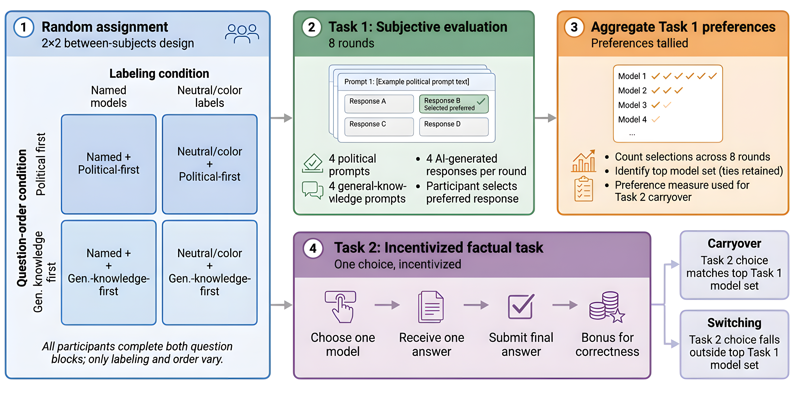
2 × 2 between-subjects
Sample: 1,884 US Prolific participants, demographically representative.
Mapping of color labels → underlying models randomised at the participant level and held constant within-participant.
Four models, by ideological tone
| Model | Position |
|---|---|
| Gab AI | Far right |
| xAI Grok | Conservative |
| OpenAI GPT | Neutral |
| Anthropic Claude | Liberal |
Slants align with external user-evaluation work (Westwood, Sean J. and Grimmer, Justin and Hall, Andrew B. 2025).
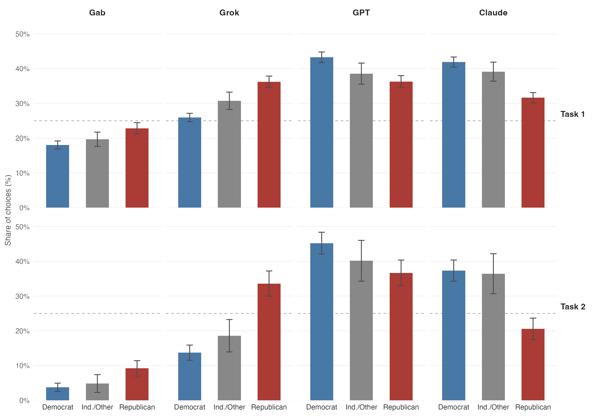
Task 1. Republicans choose Grok +10.3 pp over Democrats, Claude −10.3 pp (both p < .001).
Task 2 (incentivised). Differences widen: Grok +19.9 pp, Claude −16.8 pp (both p < .001).
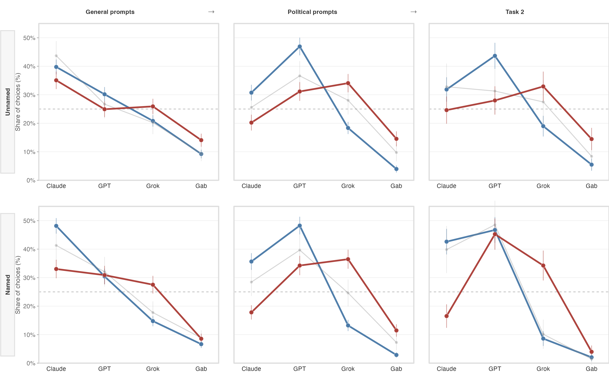
Divergence widens General → Political → Task 2 — and persists under accuracy incentives. Brand labels sharpen it.
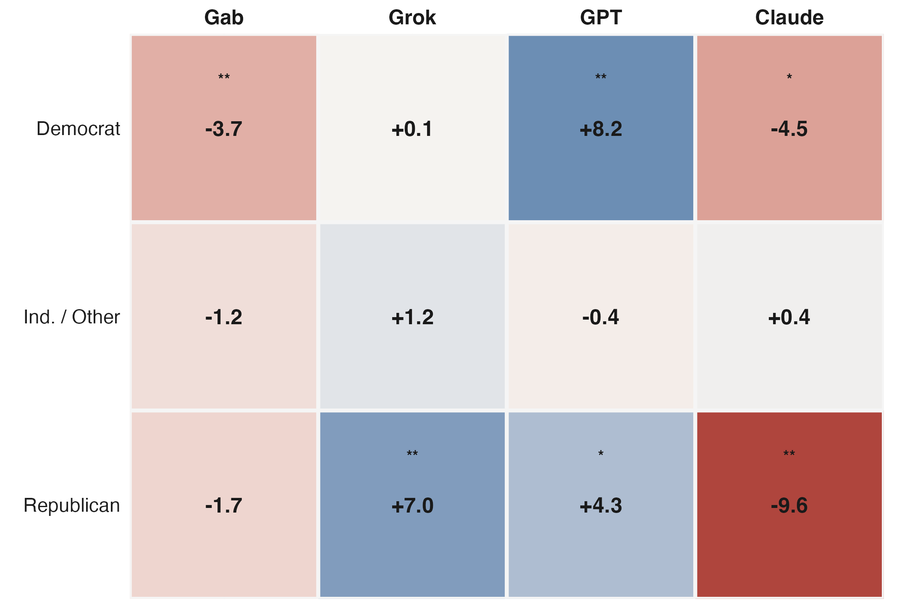
Most-preferred-model consistency in the non-political block: 61% (political-first) vs 54% (general-first) \(\beta = 0.075,\ p < .001\)
Single factual question: “By how many votes did Joe Biden win the 2020 popular vote?”
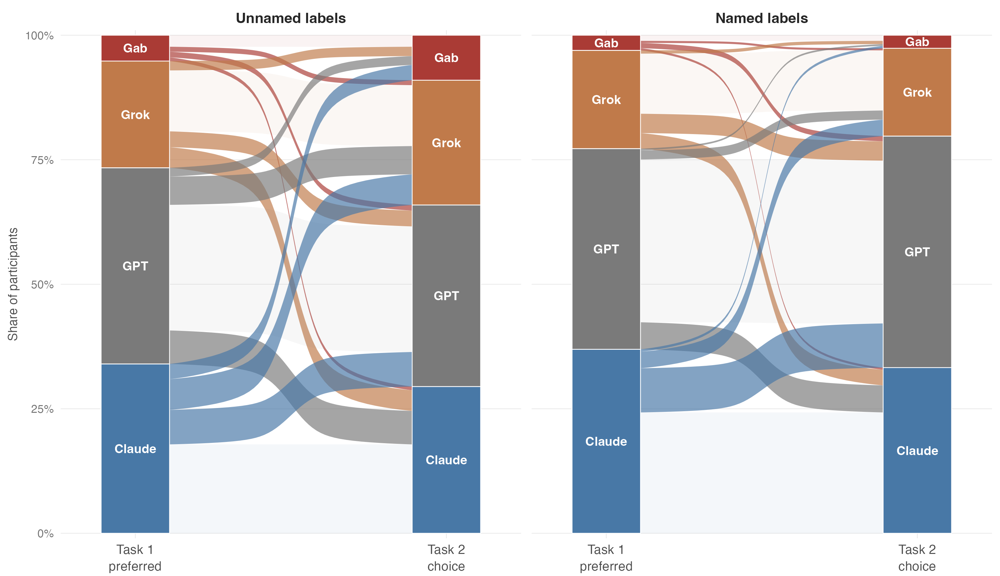
Carryover Task 1 → Task 2: 71% (vs 25% under random choice; \(t = 44.6\), \(p < .001\))
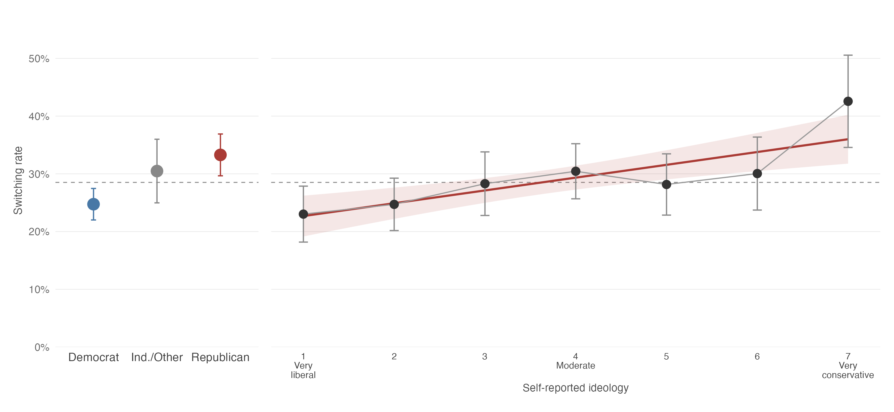
Switching ≠ uniform. Republicans switch more than Democrats; switching rises monotonically with conservatism.
AI systems are not interchangeable tools. Users sort across them along identity lines, and that sorting persists when accuracy is paid for.
Two possible developer equilibria
Implication. The choice of which AI to trust may itself emerge as a new axis of polarisation. Different groups → different systems → different ways of producing and validating knowledge.
Limitations
Acknowledgements. Funding: ESRC ESZ0005481, NSF SMA-2436762. Correspondence: michael.heseltine@sociology.ox.ac.uk
Questions?